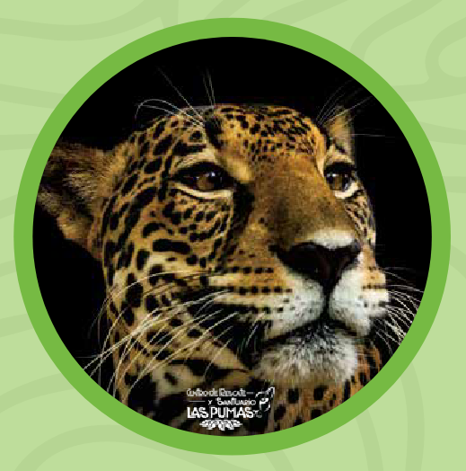
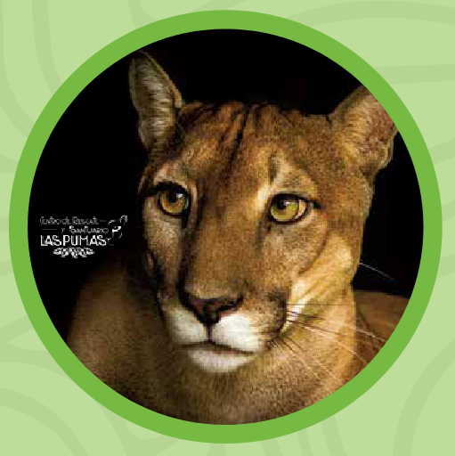
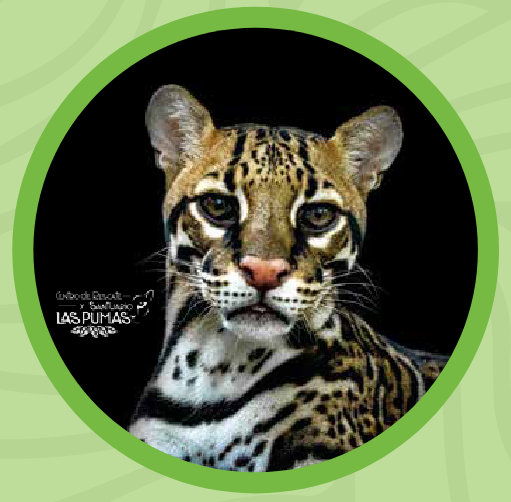
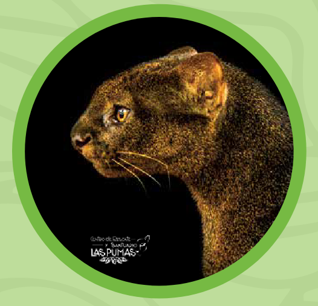
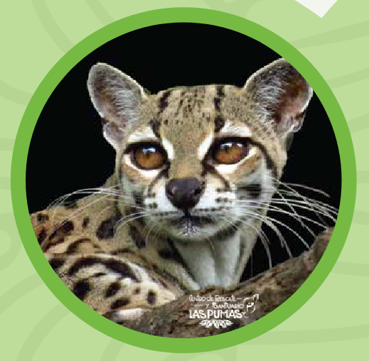
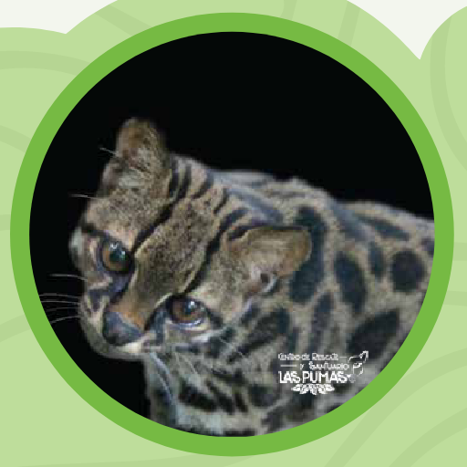

Felinos
La familia Felidae
En la clasificación taxonómica, los felinos son una familia con nombre científico Felidae, perteneciente al orden de los carnívoros (Carnivora) y a la clase de los mamíferos (Mammalia). Contiene, al menos, 36 especies silvestres. Entre sus similitudes morfológicas pueden mencionarse caras redondas, bigotes, ojos grandes y orejas grandes. Tienen el rango más amplio de tamaños corporales de todas las familias de carnívoros, con pesos que van desde 1 kg hasta 300 kg. Ocupan hábitats muy diversos y su distribución natural cubre todo el planeta, con la excepción de la Antártida y Australia, donde han sido introducidos por el ser humano (Lamberski, 2015).
Especies presentes en Costa Rica
En Costa Rica hay seis especies de felinos silvestres, cuyas fotografías se muestran en la Figure 1.






Las imágenes pertenecen al Centro de Rescate y Refugio Las Pumas y fueron publicadas en Costa Rica Silvestre - Vecinos silvestres - Felinos.
De acuerdo con el Sistema Nacional de Áreas de Conservación (Sinac), las seis especies se encuentran en peligro de extinción (Sinac, 2017).